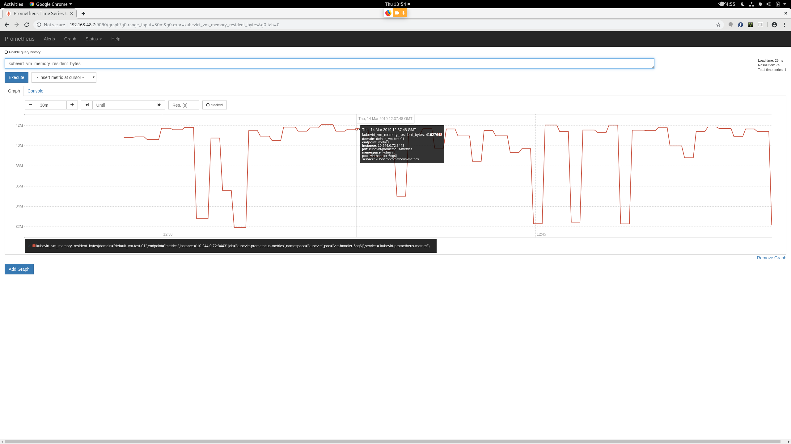
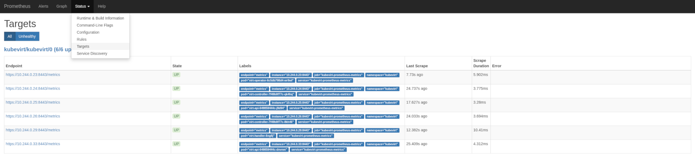

More About Kubevirt Metrics
More about KubeVirt and Prometheus metrics
In this blog post, we update about the KubeVirt metrics, continuing the series started earlier this year.
Since the previous post, the initial groundwork and first set of metrics was merged, and it is expected to be available with KubeVirt v0.15.0 and onwards.
Make sure you followed the steps described in the previous post to set up properly the monitoring stack in your KubeVirt-powered cluster.
New metrics
Let’s look at the initial set of metrics exposed by KubeVirt 0.15.0:
kubevirt_info{goversion="go1.11.4",kubeversion="v0.15.0-alpha.0.74+d7aaf3b5df4a60-dirty"}
kubevirt_vm_memory_resident_bytes{domain="$VM_NAME"}
kubevirt_vm_network_traffic_bytes_total{domain="$VM_NAME",interface="$IFACE_NAME0",type="rx"}
kubevirt_vm_network_traffic_bytes_total{domain="$VM_NAME",interface="$IFACE_NAME0",type="tx"}
kubevirt_vm_storage_iops_total{domain="$VM_NAME",drive="$DRIVE_NAME",type="read"}
kubevirt_vm_storage_iops_total{domain="$VM_NAME",drive="$DRIVE_NAME",type="write"}
kubevirt_vm_storage_times_ms_total{domain="$VM_NAME",drive="$DRIVE_NAME",type="read"}
kubevirt_vm_storage_times_ms_total{domain="$VM_NAME",drive="$DRIVE_NAME",type="write"}
kubevirt_vm_storage_traffic_bytes_total{domain="$VM_NAME",drive="$DRIVE_NAME",type="read"}
kubevirt_vm_storage_traffic_bytes_total{domain="$VM_NAME",drive="$DRIVE_NAME",type="write"}
kubevirt_vm_vcpu_seconds{domain="$VM_NAME",id="0",state="1"}
The metrics expose versioning information according to the recommendations using the kubevirt_info metric; the other metrics should be self-explanatory.
As we can expect, labels like domain, drive and interface depend on the specifics of the VM. type, however, is not and represents the subtype of the metric.
Let’s now see a real life example, from this idle, diskless VM:
apiVersion: kubevirt.io/v1alpha3
kind: VirtualMachine
metadata:
creationTimestamp: null
labels:
kubevirt.io/vm: vm-test-01
name: vm-test-01
spec:
runStrategy: Halted
template:
metadata:
creationTimestamp: null
labels:
kubevirt.io/vm: vm-test-01
spec:
domain:
devices:
interfaces:
- name: default
bridge: {}
machine:
type: ""
resources:
requests:
memory: 64M
networks:
- name: default
pod: {}
terminationGracePeriodSeconds: 0
status: {}
Querying the endpoint (see below) yields something like
kubevirt_info{goversion="go1.11.4",kubeversion="v0.15.0"} 1
kubevirt_vm_memory_resident_bytes{domain="default_vm-test-01"} 4.25984e+07
kubevirt_vm_network_traffic_bytes_total{domain="default_vm-test-01",interface="vnet0",type="rx"} 90
kubevirt_vm_network_traffic_bytes_total{domain="default_vm-test-01",interface="vnet0",type="tx"} 0
kubevirt_vm_vcpu_seconds{domain="default_vm-test-01",id="0",state="1"} 613
Example of how the kubevirt_vm_memory_resident_bytes metric looks like in the Prometheus UI

Accessing the metrics programmatically
We can access the VM metrics using the standard Prometheus API. For example, let’s get the same data about the memory consumption we have seen above in the Prometheus UI. The following query yields all the data for the year 2019, aggregated every two hours. Not much data in this case, but beware of potentially large result sets.
curl -g 'http://$CLUSTER_IP:9090/api/v1/query_range?query=kubevirt_vm_memory_resident_bytes&start=2019-01-01T00:00:00.001Z&end=2019-12-31T23:59:59.999Z&step=7200s' | json_pp
Which yields something like
{
"data": {
"resultType": "matrix",
"result": [
{
"values": [
[1552514400.001, "44036096"],
[1552521600.001, "42348544"],
[1552528800.001, "44040192"],
[1552536000.001, "42291200"],
[1552543200.001, "42450944"],
[1552550400.001, "43315200"]
],
"metric": {
"__name__": "kubevirt_vm_memory_resident_bytes",
"job": "kubevirt-prometheus-metrics",
"endpoint": "metrics",
"pod": "virt-handler-6ng6j",
"domain": "default_vm-test-01",
"instance": "10.244.0.29:8443",
"service": "kubevirt-prometheus-metrics",
"namespace": "kubevirt"
}
}
]
},
"status": "success"
}
Troubleshooting tips
We strive to make the monitoring experience seamless, streamlined and working out of the box, but the stack is still evolving fast, and there are many options to actually set up the monitoring stack. Here we present some troubleshooting tips for the most common issues.
prometheus targets
An underused feature of the Prometheus server is the target configuration. The Prometehus server exposes data about the targets it is
looking for, so we can easily asses if the Prometheus server knows that it must scrape the kubevirt endpoints for metrics.
We can see this both in the Prometheus UI:

Or programmatically, with the Prometheus REST API:
curl -g 'http://192.168.48.7:9090/api/v1/targets' | json_pp
(output trimmed for brevity):
{
"data": {
"activeTargets": [
{
"lastError": "",
"lastScrape": "2019-03-14T13:38:52.886262669Z",
"scrapeUrl": "https://10.244.0.72:8443/metrics",
"labels": {
"service": "kubevirt-prometheus-metrics",
"instance": "10.244.0.72:8443",
"job": "kubevirt-prometheus-metrics",
"pod": "virt-handler-6ng6j",
"endpoint": "metrics",
"namespace": "kubevirt"
},
"discoveredLabels": {
"__meta_kubernetes_pod_phase": "Running",
"__meta_kubernetes_endpoints_name": "kubevirt-prometheus-metrics",
"__meta_kubernetes_endpoint_address_target_name": "virt-handler-6ng6j",
"__meta_kubernetes_service_name": "kubevirt-prometheus-metrics",
"__meta_kubernetes_pod_label_pod_template_generation": "1",
"__meta_kubernetes_endpoint_port_name": "metrics",
"__meta_kubernetes_service_label_app_kubernetes_io_managed_by": "kubevirt-operator",
"__meta_kubernetes_pod_name": "virt-handler-6ng6j",
"__address__": "10.244.0.72:8443",
"__meta_kubernetes_pod_container_name": "virt-handler",
"__meta_kubernetes_pod_container_port_number": "8443",
"__meta_kubernetes_pod_controller_kind": "DaemonSet",
"__meta_kubernetes_pod_label_kubevirt_io": "virt-handler",
"__meta_kubernetes_pod_label_controller_revision_hash": "7bc9c7665b",
"__meta_kubernetes_pod_container_port_name": "metrics",
"__meta_kubernetes_pod_ready": "true",
"__scheme__": "https",
"__meta_kubernetes_namespace": "kubevirt",
"__meta_kubernetes_pod_annotation_scheduler_alpha_kubernetes_io_tolerations": "[{\"key\":\"CriticalAddonsOnly\",\"operator\":\"Exists\"}]",
"__meta_kubernetes_pod_container_port_protocol": "TCP",
"__meta_kubernetes_pod_annotation_scheduler_alpha_kubernetes_io_critical_pod": "",
"__meta_kubernetes_pod_label_prometheus_kubevirt_io": "",
"__metrics_path__": "/metrics",
"__meta_kubernetes_pod_controller_name": "virt-handler",
"__meta_kubernetes_pod_node_name": "c7-allinone-2.kube.lan",
"__meta_kubernetes_endpoint_address_target_kind": "Pod",
"__meta_kubernetes_endpoint_port_protocol": "TCP",
"__meta_kubernetes_service_label_prometheus_kubevirt_io": "",
"__meta_kubernetes_pod_uid": "7d65f67a-45c8-11e9-8567-5254000be9ec",
"job": "kubevirt/kubevirt/0",
"__meta_kubernetes_service_label_kubevirt_io": "",
"__meta_kubernetes_pod_ip": "10.244.0.72",
"__meta_kubernetes_endpoint_ready": "true",
"__meta_kubernetes_pod_host_ip": "192.168.48.7"
},
"health": "up"
}
],
"droppedTargets": [
{
"discoveredLabels": {
"__meta_kubernetes_service_name": "virt-api",
"__meta_kubernetes_endpoint_address_target_name": "virt-api-649859444c-dnvnm",
"__meta_kubernetes_pod_phase": "Running",
"__meta_kubernetes_endpoints_name": "virt-api",
"__meta_kubernetes_pod_container_name": "virt-api",
"__meta_kubernetes_service_label_app_kubernetes_io_managed_by": "kubevirt-operator",
"__meta_kubernetes_pod_name": "virt-api-649859444c-dnvnm",
"__address__": "10.244.0.59:8443",
"__meta_kubernetes_endpoint_port_name": "",
"__meta_kubernetes_pod_container_port_name": "virt-api",
"__meta_kubernetes_pod_ready": "true",
"__meta_kubernetes_pod_label_kubevirt_io": "virt-api",
"__meta_kubernetes_pod_controller_kind": "ReplicaSet",
"__meta_kubernetes_pod_container_port_number": "8443",
"__meta_kubernetes_namespace": "kubevirt",
"__meta_kubernetes_pod_annotation_scheduler_alpha_kubernetes_io_tolerations": "[{\"key\":\"CriticalAddonsOnly\",\"operator\":\"Exists\"}]",
"__scheme__": "https",
"__meta_kubernetes_pod_label_prometheus_kubevirt_io": "",
"__meta_kubernetes_pod_annotation_scheduler_alpha_kubernetes_io_critical_pod": "",
"__meta_kubernetes_pod_container_port_protocol": "TCP",
"__metrics_path__": "/metrics",
"__meta_kubernetes_endpoint_address_target_kind": "Pod",
"__meta_kubernetes_endpoint_port_protocol": "TCP",
"__meta_kubernetes_pod_controller_name": "virt-api-649859444c",
"__meta_kubernetes_pod_label_pod_template_hash": "649859444c",
"__meta_kubernetes_pod_node_name": "c7-allinone-2.kube.lan",
"__meta_kubernetes_pod_host_ip": "192.168.48.7",
"job": "kubevirt/kubevirt/0",
"__meta_kubernetes_service_label_kubevirt_io": "virt-api",
"__meta_kubernetes_endpoint_ready": "true",
"__meta_kubernetes_pod_ip": "10.244.0.59",
"__meta_kubernetes_pod_uid": "7d5c3299-45c8-11e9-8567-5254000be9ec"
}
}
]
},
"status": "success"
}
The Prometheus target state gives us a very useful information that shapes the next steps during the troubleshooting:
- does the Prometheus server know it should scrape our target? If no, we should check the Prometheus configuration, which is, in our case, driven by the Prometheus operator. Otherwise:
- can the Prometheus server access the endpoint? If no, we need to check the network connectivity/DNS configuration, or the endpoint itself
servicemonitors
servicemonitors are the objects the prometheus-operator consume to produce the right prometheus configuration that the server running in the cluster
will consume to scrape the metrics endpoints. See the documentation for all the details.
We describe two of the most common pitfalls.
create the servicemonitor in the right namespace
KubeVirt services run in the kubevirt namespace. Make sure to create the servicemonitor in the same namespace:
kubectl get pods -n kubevirt
NAME READY STATUS RESTARTS AGE
virt-api-649859444c-dnvnm 1/1 Running 2 19h
virt-api-649859444c-j9d94 1/1 Running 2 19h
virt-controller-7f49b8f77c-8kh46 1/1 Running 2 19h
virt-controller-7f49b8f77c-qk4hq 1/1 Running 2 19h
virt-handler-6ng6j 1/1 Running 2 19h
virt-operator-6c5db798d4-wr9wl 1/1 Running 6 19h
kubectl get servicemonitor -n kubevirt
NAME AGE
kubevirt 16h
Actually, the servicemonitor should be created in the same namespace on which the kubevirt-prometheus-metrics service is defined:
kubectl get svc -n kubevirt
NAME TYPE CLUSTER-IP EXTERNAL-IP PORT(S) AGE
kubevirt-prometheus-metrics ClusterIP 10.109.85.101 <none> 443/TCP 19h
virt-api ClusterIP 10.109.162.102 <none> 443/TCP 19h
See the KubeVirt documentation for all the details.
configure the Prometheus instance to look in the right namespace
The prometheus server instance(s) run by default in their own namespace; this is the recommended configuration, and running them in the same kubevirt namespace
is not recommended anyway.
So, make sure that the prometheus configuration we use looks in all the relevant namespaces, using something like
apiVersion: monitoring.coreos.com/v1
kind: Prometheus
metadata:
name: prometheus
spec:
serviceAccountName: prometheus
serviceMonitorNamespaceSelector:
matchLabels:
prometheus.kubevirt.io: ""
serviceMonitorSelector:
matchLabels:
prometheus.kubevirt.io: ""
resources:
requests:
memory: 400Mi
Please note the usage of the serviceMonitorNamespaceSelector.
See here and here
for more details.
Namespaces must have the right label, prometheus.kubevirt.io, to be searched for servicemonitors. The kubevirt namespace is, of course, set correctly by default
apiVersion: v1
kind: Namespace
metadata:
creationTimestamp: "2019-03-13T19:43:25Z"
labels:
kubevirt.io: ""
prometheus.kubevirt.io: ""
name: kubevirt
resourceVersion: "228178"
selfLink: /api/v1/namespaces/kubevirt
uid: 44a0783f-45c8-11e9-8567-5254000be9ec
spec:
finalizers:
- kubernetes
status:
phase: Active
But please make sure that any other namespace you may want to monitor has the correct label.
endpoint state
As in KubeVirt 0.15.0, virt-handler is the component which exposes the VM metrics through its Prometheus endpoint. Let’s check it reports the data correctly.
First, let’s get the virt-handler IP address. We look out the instance we want to check with
kubectl get pods -n kubevirt
Then we query the address:
kubectl get pod -o json -n KubeVirt $VIRT_HANDLER_POD | jq -r '.status.podIP'
Prometheus tooling adds lots of metrics about internal state. In this case we care only about kubevirt-related metrics, so we filter out everything else with something like
grep -E '^kubevirt_'
Putting all together:
curl -s -k -L https://$(kubectl get pod -o json -n KubeVirt virt-handler-6ng6j | jq -r '.status.podIP'):8443/metrics | grep -E '^kubevirt_'
Let’s see how a healthy output looks like:
kubevirt_info{goversion="go1.11.4",kubeversion="v0.15.0"} 1
kubevirt_vm_memory_resident_bytes{domain="default_vm-test-01"} 4.1168896e+07
kubevirt_vm_network_traffic_bytes_total{domain="default_vm-test-01",interface="vnet0",type="rx"} 90
kubevirt_vm_network_traffic_bytes_total{domain="default_vm-test-01",interface="vnet0",type="tx"} 0
kubevirt_vm_vcpu_seconds{domain="default_vm-test-01",id="0",state="1"} 5173
Please remember that some metrics can be correctly omitted for some VMs.
In general, we should always see metrics about version (pseudo metric), memory, network, and CPU.
But there are known cases on which not having storage metrics is expected and correct: for example this case, since we are using a diskless VM.
Coming next
The KubeVirt team is still working to enhance and refine the metrics support. There are two main active topics. First, discussion is ongoing about adding more metrics, depending on the needs of the community or the needs of the ecosystem.
Furthermore, there is work in progress to increase the robustness and the reliability of the monitoring. We also have plans to improve the integration with kubernetes. Stay tuned for more updates!